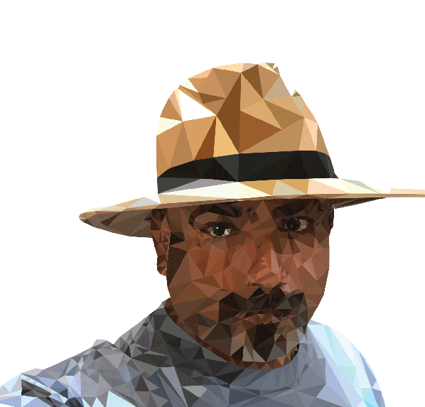

So you need help with your digital or print marketing. I am here to help you solve all of your visual branding, promotion, and information distribution needs. Whether you require something as simple as a one-time invitation, long document formatting, business forms to more complex complete brand identification creations. This formally trained Graphic Designer has formally studied at San Antonio College, School of Visual Arts and graduated from Pratt Institute in Brooklyn, NY.
My work experience includes freelance production work, in-house creative service department design, typesetting, illustration, photography, digital photo editing, prepress troubleshooting, and audio CD-ROM package design.
My work experience includes freelance production work, in-house creative service department design, typesetting, illustration, photography, digital photo editing, prepress troubleshooting, and audio CD-ROM package design.
